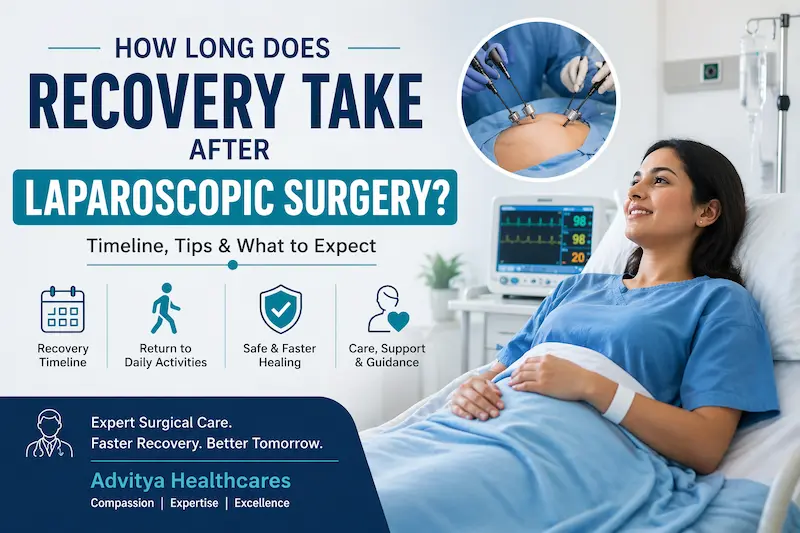
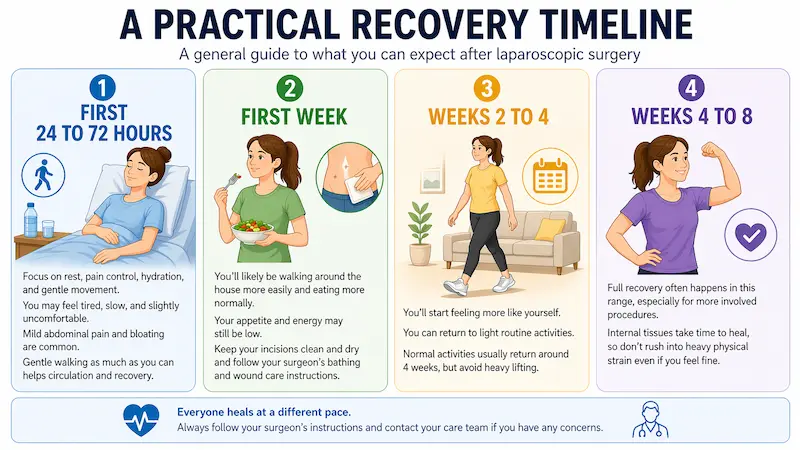
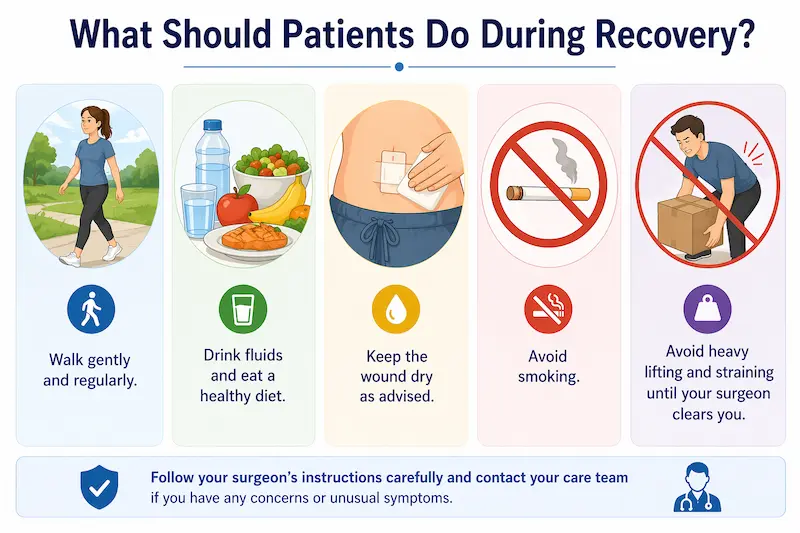
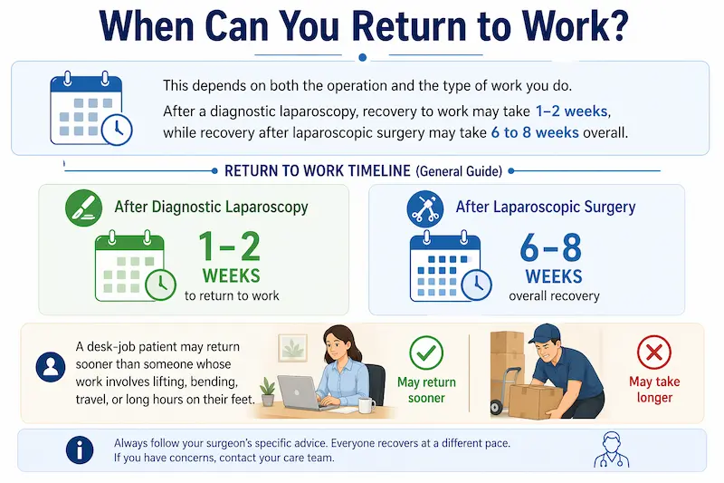
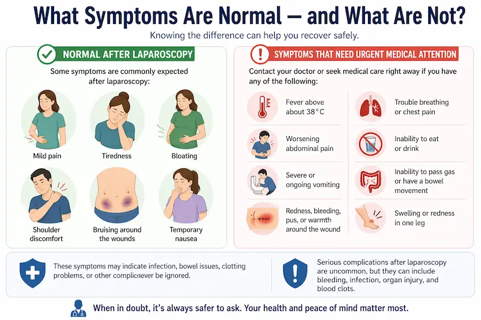

A practical week-by-week timeline, what slows recovery down, and the symptoms that need urgent attention rather than patience.
When patients hear the words “laparoscopic surgery” or “keyhole surgery,” one of the first questions they ask is:
“Doctor, how long will recovery take?”
It is a very practical question — because recovery is not only about stitches healing. It is also about when you can walk comfortably, eat normally, return to work, lift weights, drive, and resume daily life. In general, laparoscopic surgery tends to cause less pain, shorter hospital stay, and faster recovery than open surgery because it uses a few small cuts instead of one large incision.
At Advitya Healthcares, we explain recovery in a simple way:
Laparoscopic surgery usually helps patients recover faster — but there is no one fixed timeline for everyone. Recovery depends on the operation performed, its complexity, whether it remained laparoscopic or required conversion to open surgery, and the patient’s age, fitness, and overall health.
The Short Answer
For many patients, discharge happens the same day or the next day, and mild soreness, bloating, tiredness, and shoulder pain can be expected for a few days. If the laparoscopy was mainly diagnostic, recovery may be around 1 week, though return to work can vary; most return to work within 2 weeks after routine laparoscopic surgery. If it were a therapeutic laparoscopic surgery or an advanced laparoscopic surgery, full recovery can take 4 to 6 weeks, even though many patients feel much better much earlier.
So the real answer is this:
You may start feeling better within days, but full recovery is often measured in weeks, not hours. And most importantly, it depends on the patient’s mindset and will to get better.
What Happens Immediately After Surgery?
After laparoscopic surgery, patients usually spend about one hour in the recovery room while the team monitors them as the anaesthesia wears off. Many people go home after a few hours, while others stay overnight, depending on the procedure and how they are feeling. Common early symptoms include sleepiness, sore throat, abdominal discomfort, bloating, bruising around the wounds, nausea, and shoulder pain caused by the gas used during surgery.
That shoulder pain surprises many people, but it is common after a laparoscopy. It happens because the gas used during surgery can irritate nerves inside the abdomen, and that irritation may be felt in the shoulder area for a short time.
A Practical Recovery Timeline

First 24 to 72 hours
This is usually the phase of rest, pain control, hydration, and gentle movement. You may feel tired, slow, and slightly uncomfortable. Mild abdominal pain and bloating are common. Most guidance recommends moving around as much as you comfortably can, because gentle walking helps circulation and recovery.
First week
By this stage, many patients are walking around the house more easily and eating more normally, though appetite and energy may still not be fully back. Wound care matters here — keep the incisions clean and dry and follow the exact bathing instructions your surgeon gives you.
Weeks 2 to 4
This is often the period when patients start feeling “more like themselves.” Some laparoscopic procedures allow a return to light routine activities earlier, and procedure-specific guidance, such as SAGES’ patient information for laparoscopic anti-reflux surgery, says light activity can begin immediately, while normal activities often return around 4 weeks, with heavy lifting still restricted.
Weeks 4 to 8
This is the range in which full recovery often happens after laparoscopic surgery, especially if the operation was more than a simple diagnostic procedure. Even when wounds look small from the outside, the internal tissues still need time to heal properly. That is why patients may look fine before they are truly ready for full physical strain.
What Slows Recovery Down?
Recovery may take longer if:
- The surgery was complex or lengthy,
- The procedure had to be converted to open surgery,
- The patient has other health conditions,
- The job involves heavy lifting or strenuous activity,
- Pain, constipation, poor eating, or infection interfere with healing.
This is why two patients who both had “laparoscopic surgery” may recover at very different speeds. A simple diagnostic laparoscopy and a major laparoscopic operation are not the same thing.
What Should Patients Do During Recovery?
In most cases, good recovery habits are simple:

- walk gently and regularly,
- drink fluids and eat a healthy diet,
- keep the wound dry as advised,
- avoid smoking,
- avoid heavy lifting and straining until your surgeon clears you.
The “small cut” approach should not make patients overconfident. A laparoscopic wound may look tiny, but the body has still gone through surgery. Doing too much too early can increase pain and slow healing.
When Can You Return to Work?
This depends on both the operation and the type of work you do. After a diagnostic laparoscopy, recovery to work may take 1-2 weeks, while recovery after laparoscopic surgery may take 6 to 8 weeks overall. A desk-job patient may return sooner than someone whose work involves lifting, bending, travel, or long hours on their feet.

At Advitya Healthcares, we usually advise patients not to compare themselves with friends or relatives. The better question is not, “How fast can I get back?” but “How safely can I recover?”
What Symptoms Are Normal — and What Are Not?
Some symptoms are commonly expected after laparoscopy:
mild pain, tiredness, bloating, shoulder discomfort, bruising around the wounds, and temporary nausea.

But certain symptoms need urgent medical attention, including:
- fever above about 38°C,
- worsening abdominal pain,
- severe or ongoing vomiting,
- redness, bleeding, pus, or warmth around the wound,
- trouble breathing or chest pain,
- inability to eat or drink,
- inability to pass gas or have a bowel movement,
- swelling or redness in one leg.
These symptoms may indicate infection, bowel issues, clotting problems, or other complications and should never be ignored. Serious complications after laparoscopy are uncommon, but they can include bleeding, infection, organ injury, and blood clots.
Final Word
So, how long does recovery take after laparoscopic surgery?
The most honest answer is:
Many patients recover faster than they would after open surgery, but full recovery still takes time. You may go home the same day or the next day, feel significantly better in days to a couple of weeks, and still need several weeks before your body is fully healed.
At Advitya Healthcares, we encourage patients to think of recovery not as a race, but as a planned process. Good surgery matters — but good recovery matters just as much. If you follow your surgeon’s instructions, avoid overexertion, and report warning signs early, laparoscopic recovery is usually smoother, safer, and quicker than many people expect.
Have a question this article does not answer?
Send us your reports. A specialist reviews them before you travel, so the first visit begins with a plan rather than a repeat test.